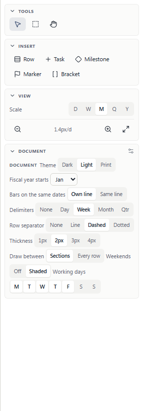
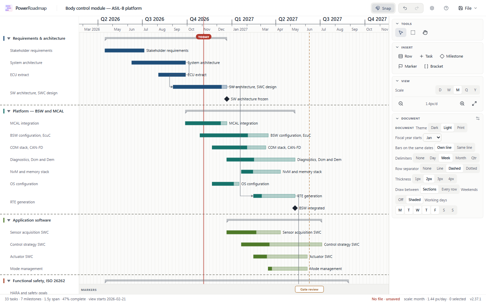
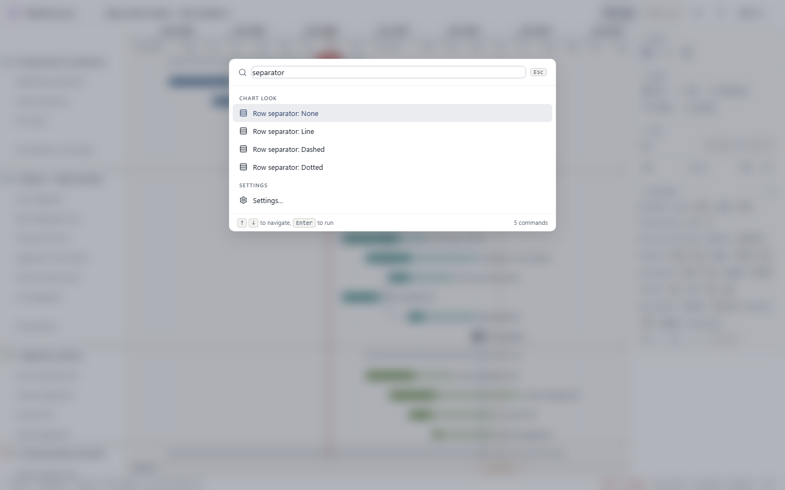
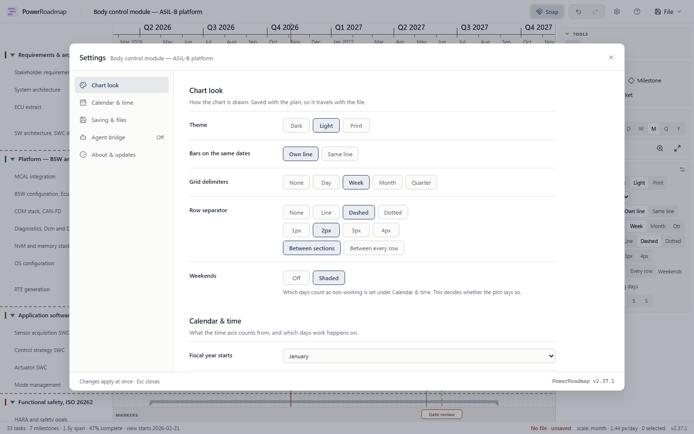

PowerRoadmap v2.37.1 — the row separator shipped a day ago and the owner could not find it. 4 November 2026.
"Did you add it? Like a separator? If so, where can I set it? I don't see where I can."
It had shipped, and it worked. It was in Settings → Chart look, behind the gear in the header. Nine tests covered it drawing correctly; none covered it being found, so the suite was green and the feature was, to the only person who matters, missing.
The side panel has a Document section, and it already held four chart-look settings: theme, whether bars share a line, grid delimiters, weekends. The row separator was the fifth of its kind and the only one that was not there. Looking at the place where the look settings live and finding no fifth is not a user error — it is the correct inference from what the panel showed.
An audit of both surfaces found those three controls — style, width, scope — were the only settings reachable from one surface and not the other. Nothing else had drifted. Which is the clue to the cause.
Each surface kept its own hand-written option lists. Two THEMES constants, one keyed id and one value. DELIMITERS here and DELIMITER_CHOICES there, one saying "Quarter" and the other "Qtr". Six of the seven settings were duplicated this way; only one, OVERLAP, was shared. Nothing connected the two files, so adding a setting to one could not fail in the other. It could only be forgotten.
So the options now live in one module, app/lookChoices.ts, and both surfaces read it. Labels may still differ — the panel is a 288px column and says "Sections" where the dialog has room for "Between sections" — but that is a typographic choice, declared as a short field on the one option, not two lists drifting apart.

Both sub-controls got their own label here, where the dialog leaves them bare. The panel is a wrapping flex column, not the dialog's label/control grid: an unlabelled strip starts mid-line against the control above it, and the next field's label then lands beside it — "Sections | Every row | Weekends" reads as three scope options, one of which is a heading.

The command palette carried no entry containing the word "separator" anywhere — not in a label, not in a keyword. A planner who could not find the setting and typed the word for it got nothing back. There are four entries now, which set the style directly the way the theme commands do, rather than only opening the dialog at the right section.


SRS-SET-015 · SRS-LAY-061
The suite proved the separator worked and never asked whether anyone could reach it. There are now two tests that do, and the contract they hold both surfaces to is a list of five aria-labels in lookChoices.ts — the same spelling on both surfaces, so a screen reader also hears one setting named one way wherever it is met.
The source-level one runs in milliseconds on every unit pass. Rather than trust it, it was broken on purpose first: renaming the panel's group to "Row rule" fails it with "the side panel has no control labelled Row separator", which is the sentence that would have stopped this release a day earlier.
This is the part worth keeping. Partway through, the dev server went white and Playwright timed out on every spec, including ones that had passed an hour before. The cause was a duplicate Rows3 in an import list — mine, added without looking. Babel rejects it outright.
npx tsc --noEmit had reported clean. So had eslint. A deliberate const __probe: number = "not a number" appended to the same file also passed.
The root tsconfig.json is a solution-style config: "files": [] with project references. Bare tsc --noEmit against it checks zero files and exits 0. The real check is tsc -b, which follows the references, and it lives inside npm run build where nothing calls it by name. Run properly, it caught three real errors in this change immediately, including an invalid palette group in my own new code.
Every release note here saying "tsc clean" was reporting a command that checked nothing. There is a typecheck script now, it is tsc -b, and it was negative-controlled against the duplicate import: error TS2300: Duplicate identifier 'Rows3'.
| Check | Result |
|---|---|
| Typecheck | npm run typecheck (tsc -b) — clean. The previous tsc --noEmit checked 0 files and is retired. |
| Lint | eslint — 0 errors |
| Unit | 580 tests across 73 files, 0 failed — 6 new in lookParity.test.ts |
| e2e | 34 passed, 1 skipped, 0 failed across the 5 specs this change can reach, desktop project |
| Parity spec | 5 passed: panel, dialog, panel→chart, panel→dialog, palette |
| Negative control | Renaming the panel's group fails the unit guard with the right sentence; restoring it passes |
| Gate control | tsc -b fails on the duplicate import that tsc --noEmit passed |
| Live | Panel exposes all 5 look controls; dashed 2px drew 6 rules; palette returns 5 commands for "separator"; fresh tab, no console errors |
| Build | dist-template/index.html 474,287 bytes (gzip 140.41 kB), up 1,683 from v2.37.0 |
| Not run | The tablet and mobile projects, and the 30-odd specs this change cannot reach |
Every e2e spec, including ones that had just passed. Not a flake and not the WebKit leak: the app would not compile, because of the duplicate import above. Running a known-good spec was what separated "my new test is wrong" from "the server is serving a broken app" — it failed identically, which pointed away from the test and at the environment.
Three errors from the first real typecheck. An invalid group: 'Chart look' against a closed union in the palette, and two in the new unit test where a generic signature made a mixed array uninferable. All three had been sitting under a green tsc --noEmit.
The panel's first layout. The two sub-controls rendered unlabelled, so the width strip sat in the label gutter and the "Weekends" heading landed beside the scope buttons. Caught by looking at the panel, not by a test — nothing asserts that a column reads properly.